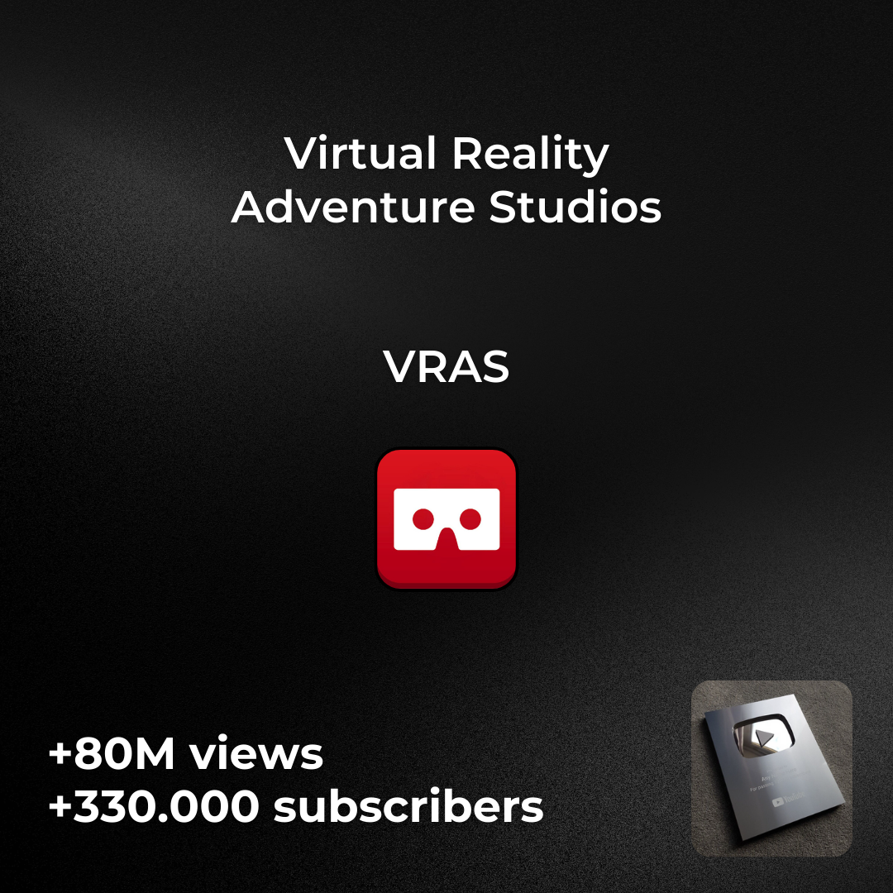
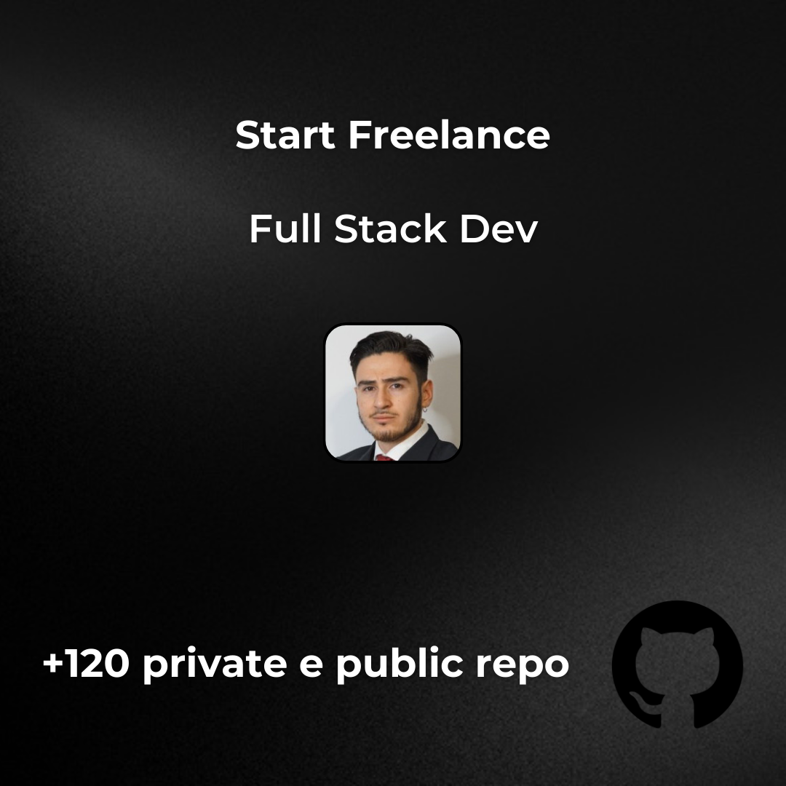
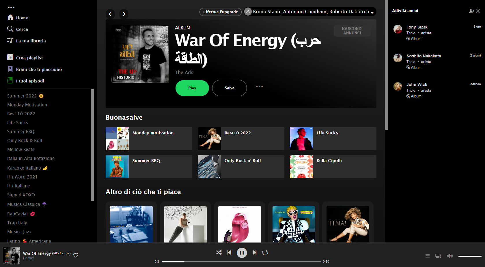

How determination can reach the happiness in Bruno Stano
Full Stack Developer
.
Founder VRAS
Virtual Reality video content on Youtube.
I create one video per week. I directed all the processes. From SEO optimization, to the creation of video content in virtual reality, to video recording, dubbing, graphics and everything that revolves around a video production reality.
For those who are more curious, here is a video trailer of the channel.
Full Stack Developer
Hard Studying and Freelance work
I started studying on my own, passionate about computers, I wanted one day to turn my passion into a profession. So I started making the first static websites, and turning it into a job.
EPICODE Global
Master in Full Stack
Frontend: In the realm of frontend development, this project boasts a dynamic combination of cutting-edge technologies. Angular, a robust and versatile front-end framework, forms the
backbone of the user interface, ensuring a seamless and interactive user experience. Bootstrap, a responsive design framework, contributes to the project's aesthetic appeal and
responsiveness. Styling is enhanced with SCSS (Sass), offering a powerful and efficient way to manage stylesheets. TypeScript, a superset of JavaScript, brings static typing to the
frontend, enhancing code robustness and maintainability. The development environment is powered by Visual Studio Code, a lightweight yet powerful code editor, providing developers with a
streamlined and efficient coding experience.
Backend: On the backend, the project leverages the strength of ASP.NET and C# to build a robust and scalable server-side infrastructure. ASP.NET, a versatile web development framework,
seamlessly integrates with C#, a powerful and modern programming language, to handle server-side logic and data processing. Visual Studio Code is also employed for backend development,
ensuring a unified and efficient coding experience across the entire application. Database management is entrusted to SQL Server Management Studio, facilitating the organization and
retrieval of data with efficiency. The .NET framework serves as the backbone for the backend, offering a comprehensive set of tools and libraries to support various functionalities.
JavaScript, CSS, HTML5, and SQL are also integral components, ensuring a cohesive integration of frontend and backend technologies. In summary, this project combines the best of frontend
and backend technologies, utilizing Angular, Bootstrap, SCSS, TypeScript, ASP.NET, C#, Visual Studio Code, SQL Server Management Studio, .NET, JavaScript, CSS, HTML5, and SQL to create a
sophisticated and efficient web application.

Spotify Clone
HTML CSS Vanilla Javascript
I created a Spotify clone, using HTML, CSS and Vanilla Javascript. I used the Spotify API to get the data of the songs and the artists. I used the Webpack to bundle the project and the
Calculator BS
HTML CSS Vanilla Javascript
A simple project, where I put a lot of love into it, and I consider it a beautiful project on a graphic and logical level.
Todolist BS
HTML CSS Vanilla Javascript
Please try it!
Static Website
HTML CSS Vanilla Javascript
Please scroll it
Rock Paper Scissors
HTML CSS Vanilla Javascript
Play!
Static Website Restaurant
HTML CSS Vanilla Javascript
Play!
Static Website Personal
HTML CSS Vanilla Javascript
Visit it
Game memory in Javascript
HTML CSS Vanilla Javascript
Visit it
Static Curriculum Personal
HTML CSS Vanilla Javascript
Visit it
Cataldo Scatamacchia
Author of Book
This website stands as a testament to the artistry of modern web development, brought to life with HTML, CSS, and vanilla JavaScript.
Custom Relation Management System
Angular Project
#CRM , #Angular, #Typescript, #SCSS, #CSS, #BOOTSTRAP, #OBSERVABLE, #Service, #Module, #Auth, #Component, #server #frontenddevelopment #frontEnd
Clinica Veterinaria
FULL STACK .NET Project
Application for potential Veterinary Clinic.
- Customer side search (pet owner)
- Employee side management
Technologies used: #asp #net #mvc #entityframework #mssql
Verita
Social Network
💡 one of my ideas comes to life...! "TRUTH" An Answer and Question social network for professionals.
MUSICALITA
- Registration / Login functionality- Add products to the cart
- Place an order
- Search guitars by name
- View guitars by category
Admin Functions (Database)
- Add, Edit, Delete Guitars
- Add, Delete Categories
- Additional functions for Admin directly on the database
Full Stack .NET
FM Technology
I played a pivotal role in the development of a comprehensive Ticket and Asset Management Web Application designed to cater to the needs of multiple clients. A major accomplishment was upgrading the application to the latest version, .NET 7, aligning it with cutting-edge technology to better serve our diverse customer base. Throughout this project, I embraced the Agile methodology, fostering a collaborative and adaptive approach to development. The Azure DevOps platform served as the backbone for efficient source code management. My technical expertise included proficiency in SQL Server Management Studio, Azure DevOps, ASP.NET, Entity Framework (EF) Core, C#, and the .NET Framework. These skills were instrumental in ensuring the success of the project. Specifically, my competencies encompassed ASP.NET MVC, Microsoft SQL Server, ASP.NET, SQL Server Management Studio, and .NET. Working in this dynamic environment allowed me to not only enhance my technical skills but also develop a keen understanding of collaborative project management and the intricacies of web application development. I am proud to have been part of a team that delivered a robust solution to meet the evolving demands of our clients.
I made it alone
Chez FM Technology
An appointment management system for industry. The application is designed to facilitate the scheduling of appointments between customers and service providers.